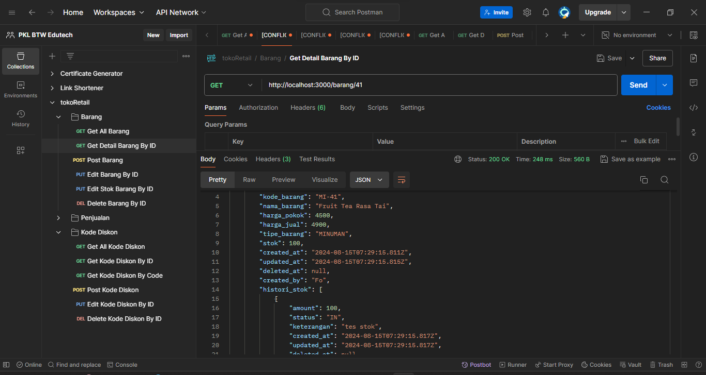

What is TokoRetail Project?
This system is designed to streamline and manage the operations of retail stores efficiently. With an intuitive interface and powerful backend functionality, this platform offers tools to handle inventory, sales, discounts, and customer transactions seamlessly.
Teams
Bagus Perwira
Backend Developer
I Kadek Pande Feri Dwi Wijaya
Backend Developer